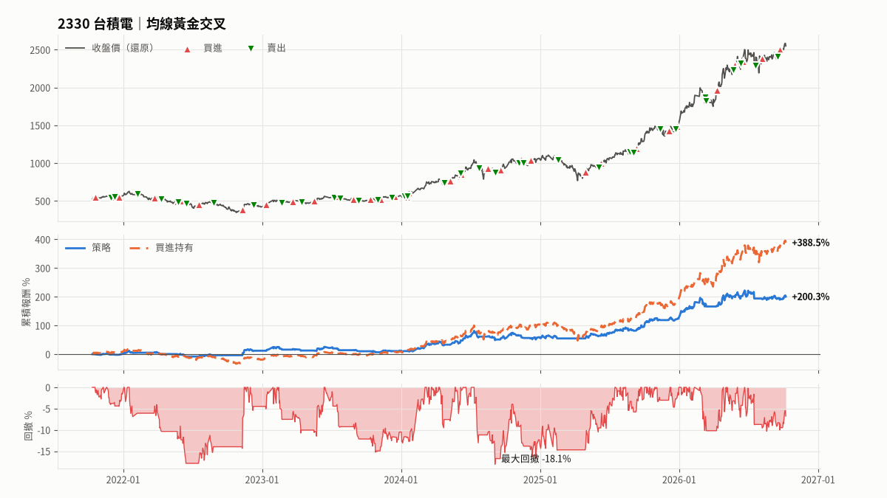
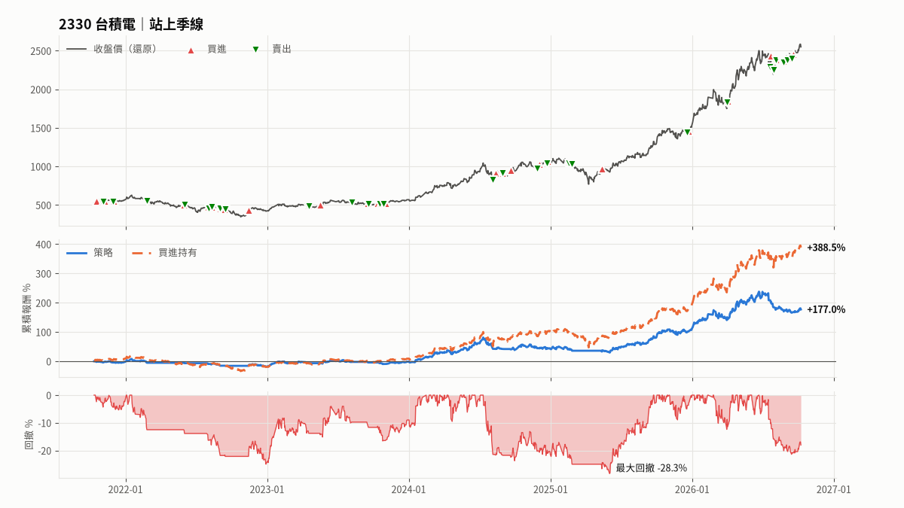
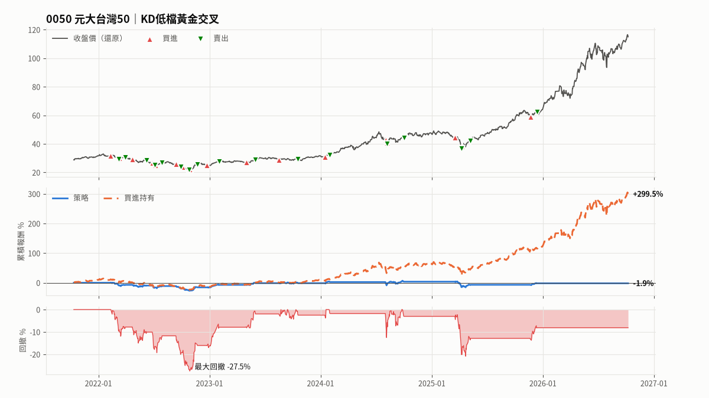
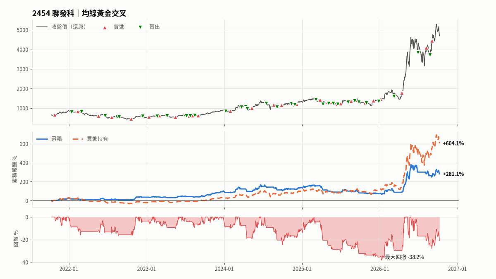
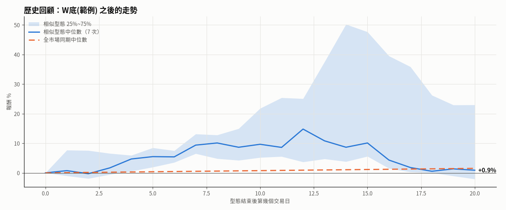

回測日報
📊 每日回測報告 2026-10-08（四）
⏳ 回測區間：近 5 年（2021-10-09 起）
💤 今天（10/09）休市，以下為最近交易日的結果
🔔 今日訊號
今日無新訊號
⚪ 持有：2330 台積電・均線黃金交叉｜未實現 +1.8%
⚪ 持有：2330 台積電・站上季線｜未實現 +3.7%
⚪ 持有：2454 聯發科・均線黃金交叉｜未實現 +5.4%
➖ 無動作：0050 元大台灣50・KD低檔黃金交叉
績效總覽
| 股票・策略 | 狀態 | 總報酬 | 買進持有 | 年化 | 最大回撤 | 夏普值 | 交易 | 勝率 | 盈虧比 | 成本加倍 |
|---|---|---|---|---|---|---|---|---|---|---|
| 2330 台積電・均線黃金交叉 | 持有中 | +200.3% | +388.5% | +25.7% | -18.1% | 1.14 | 35 | 54.3% | 3.03 | +154.2% |
| 2330 台積電・站上季線 | 持有中 | +177.0% | +388.5% | +23.6% | -28.3% | 1.00 | 32 | 28.1% | 8.30 | +137.9% |
| 0050 元大台灣50・KD低檔黃金交叉 | 空手 | -1.9% | +299.5% | -0.4% | -27.5% | 0.04 | 17 | 52.9% | 0.86 | -6.3% |
| 2454 聯發科・均線黃金交叉 | 持有中 | +281.1% | +604.1% | +32.0% | -38.2% | 0.99 | 33 | 42.4% | 3.00 | +225.8% |
🔍 型態掃描
W底(範例)（40 天）
目前沒有相似度 ≥85% 的股票
歷史相似型態 9 次，樣本少：5天 平均+4.4%／上漲89%、10天 平均+13.1%／上漲86%、20天 平均+11.0%／上漲57%｜全市場同期 20天 平均+5.5%／上漲56%
⚠️ 提醒
・2454・均線黃金交叉：回測期間有 1 次委託遇到漲跌停鎖死或停牌，已順延到下一個交易日成交
2330 台積電｜均線黃金交叉
5日均線向上穿越20日均線時買進，向下穿越時賣出
收盤 2,550（-1.4%）
狀態：持有中｜2026-09-22 以 2,505 買進 1,177 股｜未實現 +1.8%｜16 天
今日條件：
▫️ 買｜MA(5) 向上穿越 MA(20)
▫️ 賣｜MA(5) 向下穿越 MA(20)
回測績效（策略／買進持有）
總報酬 +200.3%／+388.5%
年化報酬 +25.7%／+39.0%
最大回撤 -18.1%／-44.8%
夏普值 1.14／1.22
勝率 54.3%（35 筆）｜盈虧比 3.03
平均每筆 +3.4%｜平均持有 32 天｜持股時間 64%
出場統計：賣出條件成立 35
成本加倍後總報酬：+154.2%
上次出場：2026-09-17｜賣出條件成立｜+0.4%
最近 10 筆交易（實際價格）：
| 買進日 | 買進價 | 股數 | 賣出日 | 賣出價 | 損益 | 報酬 | 出場原因 |
|---|---|---|---|---|---|---|---|
| 2026-08-07 | 2,390 | 1,228 | 2026-09-17 | 2,405 | 13,199 | +0.4% | 賣出條件成立 |
| 2026-06-17 | 2,355 | 1,282 | 2026-07-20 | 2,300 | -84,457 | -2.8% | 賣出條件成立 |
| 2026-05-27 | 2,310 | 1,302 | 2026-06-12 | 2,325 | 13,348 | +0.4% | 賣出條件成立 |
| 2026-04-10 | 1,975 | 1,346 | 2026-05-22 | 2,245 | 349,500 | +13.1% | 賣出條件成立 |
| 2026-03-12 | 1,900 | 1,451 | 2026-03-13 | 1,840 | -99,708 | -3.6% | 賣出條件成立 |
| 2025-12-26 | 1,505 | 1,470 | 2026-03-11 | 1,885 | 546,028 | +24.7% | 賣出條件成立 |
| 2025-12-05 | 1,445 | 1,512 | 2025-12-22 | 1,465 | 27,203 | +1.2% | 賣出條件成立 |
| 2025-09-10 | 1,220 | 1,487 | 2025-11-12 | 1,470 | 370,501 | +20.4% | 賣出條件成立 |
| 2025-08-29 | 1,180 | 1,579 | 2025-09-03 | 1,155 | -48,098 | -2.6% | 賣出條件成立 |
| 2025-06-10 | 1,025 | 1,600 | 2025-08-25 | 1,165 | 223,310 | +13.6% | 賣出條件成立 |
2330 台積電｜站上季線
收盤價站上季線（60日均線）買進，跌破季線賣出，適合抱波段
收盤 2,550（-1.4%）
狀態：持有中｜2026-09-18 以 2,460 買進 1,086 股｜未實現 +3.7%｜20 天
今日條件：
▫️ 買｜收盤價 站上 季線
▫️ 賣｜收盤價 跌破 季線
回測績效（策略／買進持有）
總報酬 +177.0%／+388.5%
年化報酬 +23.6%／+39.0%
最大回撤 -28.3%／-44.8%
夏普值 1.00／1.22
勝率 28.1%（32 筆）｜盈虧比 8.30
平均每筆 +3.9%｜平均持有 41 天｜持股時間 75%
出場統計：賣出條件成立 32
成本加倍後總報酬：+137.9%
上次出場：2026-09-15｜賣出條件成立｜-0.9%
最近 10 筆交易（實際價格）：
| 買進日 | 買進價 | 股數 | 賣出日 | 賣出價 | 損益 | 報酬 | 出場原因 |
|---|---|---|---|---|---|---|---|
| 2026-09-04 | 2,415 | 1,116 | 2026-09-15 | 2,405 | -23,809 | -0.9% | 賣出條件成立 |
| 2026-08-26 | 2,375 | 1,135 | 2026-09-03 | 2,385 | -1,388 | -0.1% | 賣出條件成立 |
| 2026-08-24 | 2,410 | 1,150 | 2026-08-25 | 2,355 | -76,058 | -2.7% | 賣出條件成立 |
| 2026-08-06 | 2,395 | 1,178 | 2026-08-20 | 2,365 | -48,491 | -1.7% | 賣出條件成立 |
| 2026-08-03 | 2,390 | 1,188 | 2026-08-05 | 2,385 | -19,289 | -0.7% | 賣出條件成立 |
| 2026-07-22 | 2,440 | 1,263 | 2026-07-29 | 2,260 | -240,977 | -7.8% | 賣出條件成立 |
| 2026-04-02 | 1,865 | 1,342 | 2026-07-20 | 2,300 | 577,949 | +23.1% | 賣出條件成立 |
| 2025-12-23 | 1,475 | 1,363 | 2026-04-01 | 1,840 | 494,274 | +24.6% | 賣出條件成立 |
| 2025-05-13 | 990 | 1,372 | 2025-12-19 | 1,455 | 652,282 | +48.0% | 賣出條件成立 |
| 2025-02-18 | 1,085 | 1,294 | 2025-02-25 | 1,055 | -45,282 | -3.2% | 賣出條件成立 |
0050 元大台灣50｜KD低檔黃金交叉
KD 在 30 以下黃金交叉買進，高檔死亡交叉賣出
收盤 114.95（-0.9%）
狀態：空手
今日條件：
▫️ 買｜K(9) 向上穿越 D(9)
▫️ 買｜K(9) < 30
✅ 賣｜K(9) 向下穿越 D(9) 且 K(9) > 70
回測績效（策略／買進持有）
總報酬 -1.9%／+299.5%
年化報酬 -0.4%／+33.5%
最大回撤 -27.5%／-34.0%
夏普值 0.04／1.35
勝率 52.9%（17 筆）｜盈虧比 0.86
平均每筆 +0.3%｜平均持有 27 天｜持股時間 27%
出場統計：賣出條件成立 11、停損 6
成本加倍後總報酬：-6.3%
上次出場：2025-12-12｜賣出條件成立｜+5.5%
最近 10 筆交易（實際價格）：
| 買進日 | 買進價 | 股數 | 賣出日 | 賣出價 | 損益 | 報酬 | 出場原因 |
|---|---|---|---|---|---|---|---|
| 2025-11-21 | 60.1 | 15,472 | 2025-12-12 | 63.55 | 50,760 | +5.5% | 賣出條件成立 |
| 2025-04-11 | 157.25 | 5,419 | 2025-05-08 | 172.05 | 77,744 | +9.1% | 賣出條件成立 |
| 2025-03-18 | 183.1 | 5,651 | 2025-04-08 | 151.2 | -182,735 | -17.6% | 停損（-13.5%） |
| 2024-08-07 | 169.85 | 5,642 | 2024-10-01 | 183.9 | 76,527 | +8.0% | 賣出條件成立 |
| 2024-08-02 | 178.15 | 5,743 | 2024-08-06 | 167.3 | -64,967 | -6.3% | 停損（-10.9%） |
| 2024-01-16 | 132.05 | 7,462 | 2024-02-01 | 134.35 | 37,796 | +3.8% | 賣出條件成立 |
| 2023-08-18 | 124.2 | 7,943 | 2023-10-19 | 124.4 | -1,086 | -0.1% | 賣出條件成立 |
| 2023-05-02 | 117.45 | 7,891 | 2023-06-01 | 125.35 | 59,713 | +6.4% | 賣出條件成立 |
| 2022-12-23 | 110.7 | 7,631 | 2023-02-01 | 119.1 | 82,114 | +9.7% | 賣出條件成立 |
| 2022-10-28 | 98.6 | 7,470 | 2022-11-22 | 113.4 | 108,356 | +14.7% | 賣出條件成立 |
2454 聯發科｜均線黃金交叉
5日均線向上穿越20日均線時買進，向下穿越時賣出
收盤 4,690（-3.0%）
狀態：持有中｜2026-09-02 以 4,450 買進 812 股｜未實現 +5.4%｜36 天
今日條件：
▫️ 買｜MA(5) 向上穿越 MA(20)
▫️ 賣｜MA(5) 向下穿越 MA(20)
回測績效（策略／買進持有）
總報酬 +281.1%／+604.1%
年化報酬 +32.0%／+50.0%
最大回撤 -38.2%／-49.8%
夏普值 0.99／1.16
勝率 42.4%（33 筆）｜盈虧比 3.00
平均每筆 +5.7%｜平均持有 32 天｜持股時間 62%
出場統計：賣出條件成立 31、停損 2
成本加倍後總報酬：+225.8%
上次出場：2026-08-25｜賣出條件成立｜-9.6%
最近 10 筆交易（實際價格）：
| 買進日 | 買進價 | 股數 | 賣出日 | 賣出價 | 損益 | 報酬 | 出場原因 |
|---|---|---|---|---|---|---|---|
| 2026-08-06 | 4,100 | 975 | 2026-08-25 | 3,725 | -383,042 | -9.6% | 賣出條件成立 |
| 2026-04-15 | 1,805 | 1,038 | 2026-06-29 | 3,870 | 2,126,384 | +113.4% | 賣出條件成立 |
| 2026-01-05 | 1,510 | 1,140 | 2026-03-09 | 1,620 | 152,473 | +8.8% | 賣出條件成立 |
| 2025-12-01 | 1,420 | 1,244 | 2025-12-26 | 1,390 | -45,495 | -2.6% | 賣出條件成立 |
| 2025-10-23 | 1,325 | 1,360 | 2025-10-30 | 1,305 | -35,581 | -2.0% | 賣出條件成立 |
| 2025-09-08 | 1,450 | 1,362 | 2025-09-25 | 1,330 | -172,110 | -8.7% | 賣出條件成立 |
| 2025-08-19 | 1,415 | 1,412 | 2025-09-04 | 1,405 | -23,475 | -1.2% | 賣出條件成立 |
| 2025-06-30 | 1,290 | 1,469 | 2025-08-04 | 1,340 | 102,858 | +5.4% | 賣出條件成立 |
| 2025-06-13 | 1,255 | 1,511 | 2025-06-17 | 1,260 | -1,404 | -0.1% | 賣出條件成立 |
| 2025-05-16 | 1,365 | 1,460 | 2025-05-26 | 1,305 | -96,647 | -4.8% | 賣出條件成立 |
已知限制
- 回測只代表歷史表現，不保證未來獲利。
- 標的是「現在還存在」的股票，可能高估報酬（倖存者偏差）。
- 停損停利以收盤價判斷、隔日開盤成交，實際盤中觸價的結果會不同。
- 持有期間的股利視為再投入；每檔、每個策略各自以相同初始資金獨立回測，不是投資組合。
※ 回測結果僅供參考，不構成投資建議




